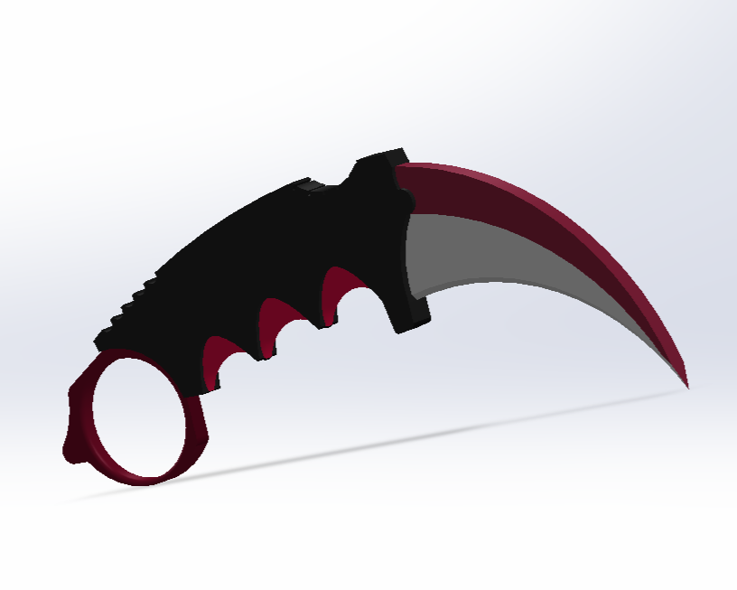
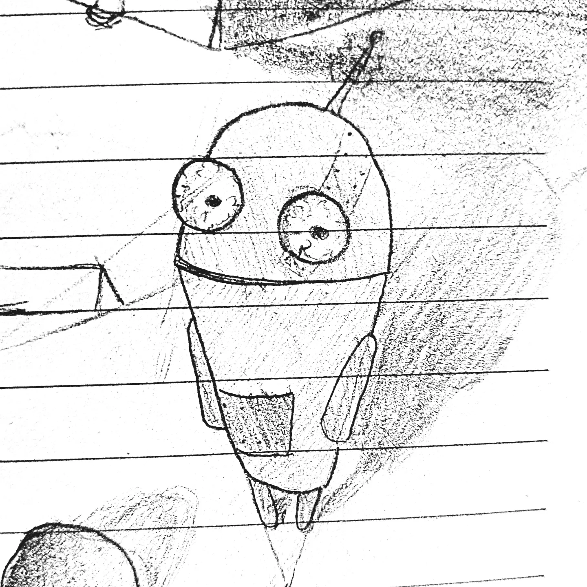

Koray
Etudiant en informatique
À propos
Étudiant en Bac Pro CIEL, je me forme à l'administration système et à la cybersécurité. En parallèle, je développe mes compétences sur SolidWorks, en dessin et en photographie.
"Vous prenez 10% et vous en faites une généralité..."
Créations & Modèles

SolidWorks
Photo

Dessin
Formation
2024-2027
Baccalauréat Professionnel Cybersécurité, Informatique et réseaux,
Électronique
Établissement d'enseignement technique
- Gestion du parc matériel : Remplacement et mise à niveau des postes de travail (RAM, SSD, GPU, CPU).
- Support de proximité : Assistance technique et dépannage informatique auprès des utilisateurs.
- Systèmes & Réseaux : Installation et configuration de systèmes de vidéosurveillance et d'infrastructures réseaux.
- Développement : Maîtrise des fondamentaux de la programmation avec le langage Python.
Expérience & Projets
Juin – Juillet 2025
Technicien de maintenance (Stage) – Centre de formation
- Électrotechnique & Schématique : Conception et réalisation de schémas électriques industriels, câblage d'armoires et maintenance des systèmes d'alimentation d'infrastructures.
- Maintenance Polyvalente : Support de proximité pour le maintien opérationnel des équipements et aide à la gestion physique des espaces de travail.
2022-2023
Service Civique – Association à impact social
- Inclusion Numérique : Lutte contre la précarité numérique via l'accompagnement et la sensibilisation aux outils informatiques.
- Engagement Social : Aide à la personne, lutte contre les discriminations et sensibilisation aux droits de l'enfant.
Projets
- Expertise Hardware : Conseil, sélection des composants et assemblage de configurations "Gaming" haute performance avec optimisation du rapport prix/puissance.
- Projet Web personnel : Conception et mise en ligne d'une plateforme de type "Bio Link" centralisant mes réseaux sociaux.